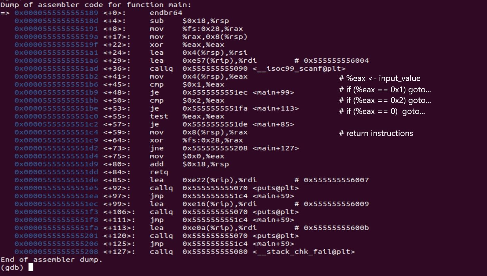
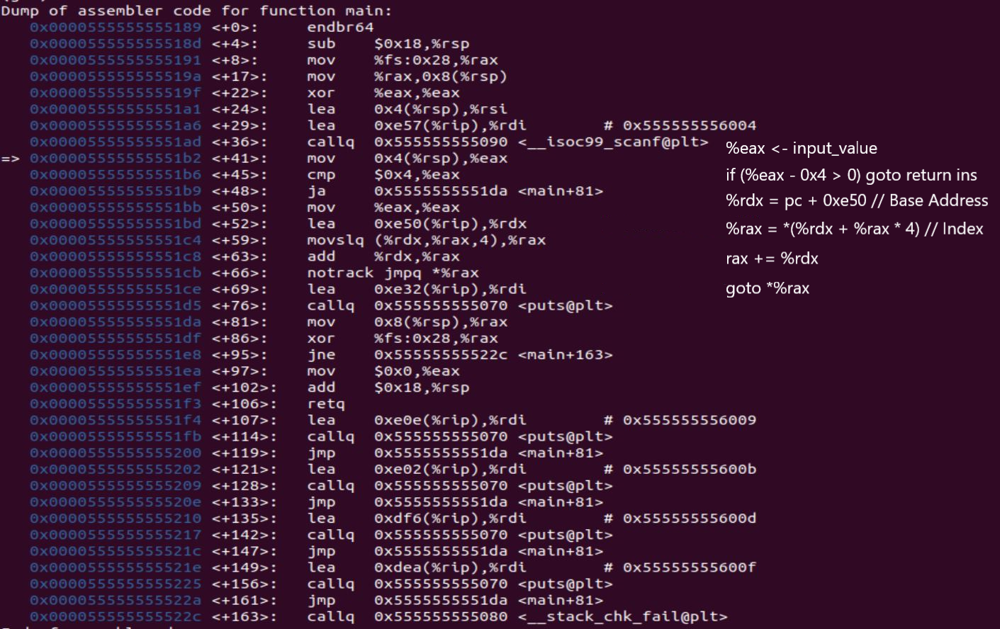
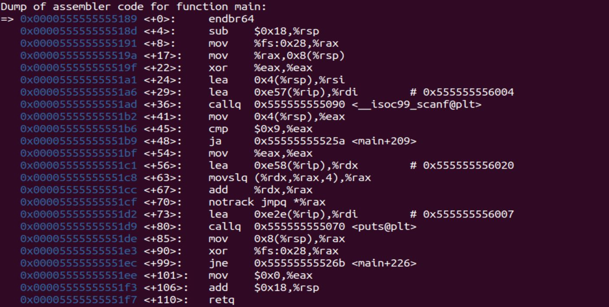
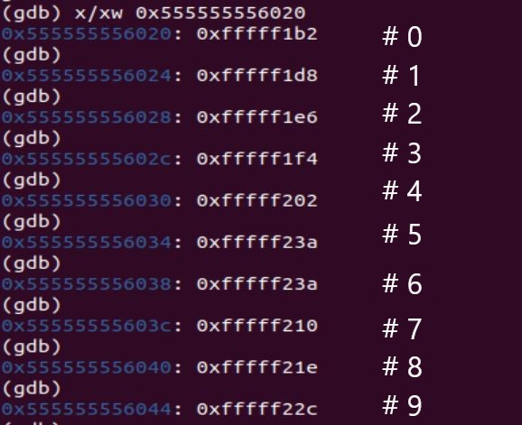
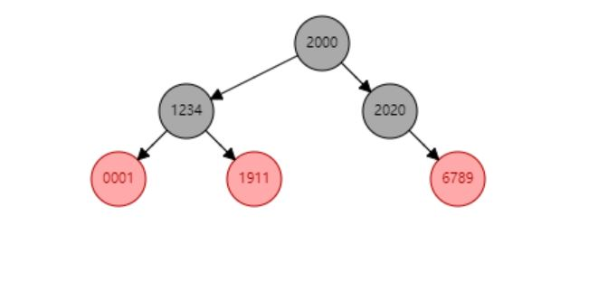

看起来上一篇 post 写的又长又严肃，主要也是因为章节内容的特点。这几节的内容是 Machine Level Programing，可以自己捣鼓的东西多了，就分出许多个小的部分来写写。
switch 语句作为 control flow 的一部分，在底层实现上比单纯 if-then-else 要复杂一点，编译器对于形式不同的 switch 语句实现了不同的优化来达到最高效率。
下面所有的实验都是在 Ubuntu x86-64 环境下进行的，编译指令是：
1 | $ gcc -Og -S <SourceFileName> -o <TargetProgramFileName> |
3 个数值
1 |
|

我们可以看到，在这种 cases 数量较少的情况下， switch 语句被当作了几个不同的 if 语句来进行处理。
5 个数值
1 |
|

关于具体的汇编代码，有几个细节：
Q：为什么看起来只判断了
command参数大于 4 的情况，小于零的情况怎么办？A：这里的
ja指令进行的是无符号数的大小比较，根据前面讲过的补码表示法，有符号的负数被解释为无符号数的时候，就是大于INT_MAX的数，自然可以被排除掉。啊，再一次体会到了编译器的强大，要是我自己去写汇编，怕是一辈子也想不到。Q：地址计算的过程到底干了些什么？
A：首先我们看到
lea 0xe50(%rip),rdx这一行，首先，%rdx被赋值了一个地址，这里出现了一个 “较大” 的运行前常量，显然这是编译器有意计算出来的，作为 “存储 cases 对应指令地址的数组的地址”。 不过通过下面add %rdx,%rax这条指令来看，这个地址并不是完整的地址，只是一个偏置量。在加过%rax后，就得到了真正的这个 case 对应的指令的地址。Q：64 字长的机器的虚拟内存的地址应该是一个 64 位整数（或者至少 48 位），占 8 个字节啊，为什么这里在访问数组的时候用到的
scaler是 4 字节的？A：还是和上面提到的一样，这个数组里面存放的数据只是地址偏置量，不是完整的地址，加过
%rax后才是真正的地址。
编译器生成了一个地址跳转表，分别对应每一个 case 对应的该执行的指令的地址，通过这一系列乍一看起来非常奇怪的寻址计算，直接 jump 到这了该执行的位置，这使得 switch 语句的整体复杂度降低到了 $O(1)$。
密集但不连续
1 |
|

这里的 C 代码中漏过了 command 参数等于 5 或者 6 的情况，多了 default 的情况。
直接从汇编里面看，没有了 je （这是自然），其它的 cases 的情况还是一个从数组中读地址的过程，那么如果碰到 command = 5 这种情况呢，我们来查看一下跳转表。

可以看到，编译器对于 case 5 和 case 6 的情况，对应的跳转位置（的值）要比其它的都要大一点点，从最终的汇编代码上看，确实 default 对应的指令在 main 函数的最末尾。
总结：如果出现间断，但整体连续的情况，编译器仍然会生成跳转表，只是让中间错过的部分跳转到 default 或者 switch 的结尾。
离散数值
看到这里相信读者会有一个自然的疑问，既然 case 的值是任意的，如果出现一个非常大的数值，那么再生成一个地址跳转表将会浪费巨额的空间，编译器自然不会这样去选择，那么这时的实现方法是什么呢？
1 |
|
读这个的汇编代码可能会有点困难…还是直接讲解演示吧。
编译器会根据给定的 cases 的值，构建一棵平衡二叉搜索树（静态的，不用修改），每一个节点对应一个 if branch ，这样可以支持在 $O(logN)$ 的时间内找到对应的分支，同样比直接顺序查找的 $O(N)$ 效率高。
